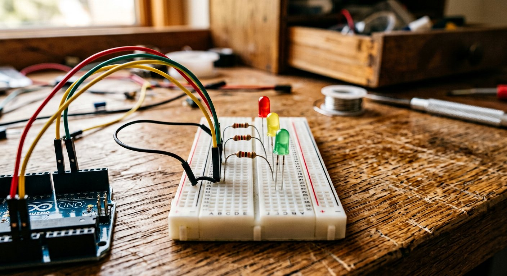

Qué cubre esta guía
- Por qué el semáforo es un proyecto ideal para empezar
- La Ley de Ohm: calculando la resistencia correcta
- Lista de materiales y costos de referencia
- Identificar la polaridad del LED: ánodo y cátodo
- Conexión de hardware: los tres LEDs
- Código Arduino: semáforo básico con delay()
- Tiempos realistas de un semáforo urbano
- Máquina de estados: una forma más robusta de programarlo
- Agregar un botón peatonal con antirrebote
- Upgrade: programación no bloqueante con millis()
- Problemas comunes y solución de errores
- Mejoras posibles y siguientes pasos
- Preguntas frecuentes
Por qué el semáforo es un proyecto ideal para empezar
Después de completar tu primer sketch Blink (si aún no lo has hecho, te recomendamos empezar por Primeros Pasos con Arduino Uno), el semáforo con LEDs es uno de los siguientes pasos más lógicos y recomendados en cualquier ruta de aprendizaje de Arduino. Combina, en un proyecto pequeño y de bajo costo, varios conceptos fundamentales que reaparecerán en prácticamente todos tus proyectos futuros:
- Electrónica básica real: aprenderás por qué un LED necesita una resistencia y cómo calcular su valor correcto, en vez de simplemente copiar un valor de internet sin entender el porqué.
- Control de múltiples salidas: tres LEDs controlados de forma coordinada es el primer paso hacia proyectos con muchas más salidas simultáneas.
- Lógica de secuencia y temporización: el semáforo tiene un comportamiento predecible y cíclico, ideal para introducir el concepto de máquina de estados de forma intuitiva.
- Un camino de upgrade claro: desde la versión más simple con
delay()hasta una versión no bloqueante conmillis()y control de botón peatonal, este proyecto crece contigo a medida que aprendes más.
La Ley de Ohm: calculando la resistencia correcta
Antes de conectar el primer LED, es fundamental entender por qué nunca se debe conectar un LED directamente a una fuente de voltaje sin una resistencia limitadora. Un LED tiene una resistencia interna muy baja; sin nada que limite la corriente, la cantidad de electricidad que pasaría a través de él superaría ampliamente lo que puede soportar, generando calor excesivo casi instantáneamente y destruyendo el componente de forma permanente e irreversible.
La Ley de Ohm (V = I × R) es la herramienta que permite calcular exactamente qué valor de resistencia limita la corriente a un nivel seguro. Adaptada para este cálculo específico, la fórmula queda así:
R = (Vfuente - Vled) / Ideseada
Donde:
Vfuente = voltaje de alimentacion (5V en un pin digital de Arduino)
Vled = voltaje directo del LED (varia segun el color, ver tabla)
Ideseada = corriente objetivo, tipicamente 0.015A (15mA) para uso seguro y duradero| Color del LED | Voltaje directo (V) aprox. | Resistencia calculada | Valor comercial recomendado |
|---|---|---|---|
| Rojo | 1.8 – 2.0 V | ~200 Ω | 220 Ω |
| Amarillo | 2.0 – 2.2 V | ~193 Ω | 220 Ω |
| Verde | 2.0 – 3.2 V | ~180 Ω | 220 Ω o 330 Ω |
| Azul / Blanco | 3.0 – 3.4 V | ~113 Ω | 150 Ω o 220 Ω |
Lista de materiales y costos de referencia
| Componente | Especificación sugerida | Precio aprox. (CLP) |
|---|---|---|
| Arduino Uno o Nano | Original o compatible con ATmega328P | $6.000 – $15.000 |
| LED rojo, amarillo y verde | 5mm, difuso o transparente | $300 – $800 (los tres) |
| Resistencias 220-330 Ω | 1/4 W, tres unidades | $100 – $300 |
| Pulsador momentáneo (opcional) | Tact switch 4 pines, para el botón peatonal | $200 – $500 |
| Resistencia 10 kΩ (opcional) | Para configuración pull-down del botón | $50 – $150 |
| Protoboard y jumpers | Set básico macho-macho | $2.000 – $5.000 |
| Total aproximado del proyecto | $8.650 – $21.750 |
Uno de los proyectos más económicos posibles para empezar: si ya tienes un Arduino de la guía anterior, el resto de los componentes cuesta menos de 2.000 pesos.
Identificar la polaridad del LED: ánodo y cátodo
A diferencia de una resistencia, que puede conectarse en cualquier orientación, un LED es un componente polarizado: solo funciona si la corriente fluye en un sentido específico. Conectarlo al revés no lo enciende (ni tampoco suele dañarlo, ya que actúa como un diodo bloqueando el paso en sentido inverso), pero es una fuente muy común de frustración para quienes recién empiezan y no entienden por qué "el LED no prende".
- Ánodo (+): la pata más larga de las dos. Se conecta hacia el pin de Arduino, generalmente a través de la resistencia limitadora.
- Cátodo (-): la pata más corta. Se conecta hacia GND (tierra).
- Lado plano de la carcasa: además de la longitud de las patas, la mayoría de los LEDs de 5mm tienen un borde aplanado visible en el plástico de la carcasa, que corresponde siempre al lado del cátodo — una referencia útil si las patas ya fueron recortadas o dobladas.
Conexión de hardware: los tres LEDs
Esquema conceptual de conexión (se repite para cada LED):
Arduino pin digital (ej. D8) ----> Resistencia 220-330 Ω ----> LED (+, pata larga, anodo)
|
Arduino GND -------------------------------------------------------+ (LED -, pata corta, catodo)
Asignacion de pines usada en el codigo de esta guia:
LED Rojo ----> Arduino pin 8
LED Amarillo ---> Arduino pin 9
LED Verde ----> Arduino pin 10Cada uno de los tres LEDs sigue exactamente el mismo patrón de conexión: pin digital → resistencia → ánodo del LED → cátodo del LED → GND. No es necesario compartir la misma resistencia entre los tres LEDs; cada uno debe tener su propia resistencia individual conectada en serie.
Código Arduino: semáforo básico con delay()
La primera versión de este proyecto usa la función delay(), la forma más simple e intuitiva de controlar temporización en Arduino, ideal para entender la lógica básica antes de avanzar hacia enfoques más sofisticados.
const int PIN_ROJO = 8;
const int PIN_AMARILLO = 9;
const int PIN_VERDE = 10;
void setup() {
pinMode(PIN_ROJO, OUTPUT);
pinMode(PIN_AMARILLO, OUTPUT);
pinMode(PIN_VERDE, OUTPUT);
}
void loop() {
// Fase ROJA
digitalWrite(PIN_ROJO, HIGH);
digitalWrite(PIN_AMARILLO, LOW);
digitalWrite(PIN_VERDE, LOW);
delay(4000);
// Fase VERDE
digitalWrite(PIN_ROJO, LOW);
digitalWrite(PIN_AMARILLO, LOW);
digitalWrite(PIN_VERDE, HIGH);
delay(4000);
// Fase AMARILLA
digitalWrite(PIN_ROJO, LOW);
digitalWrite(PIN_AMARILLO, HIGH);
digitalWrite(PIN_VERDE, LOW);
delay(1500);
}Este código, aunque perfectamente funcional, tiene una limitación importante que se hace evidente en cuanto el proyecto crece: mientras el Arduino está "esperando" dentro de cualquiera de los delay(), no puede hacer absolutamente nada más — ni leer un botón, ni controlar otro semáforo, ni reaccionar a ningún evento externo. Esta limitación se aborda más adelante en la sección de millis().
Tiempos realistas de un semáforo urbano
Para dar un toque de realismo adicional al proyecto, vale la pena conocer los rangos de tiempo típicos que usan los semáforos urbanos reales, aunque estos varían según el país, el tipo de intersección y el volumen de tráfico esperado:
| Fase | Duración típica | Propósito |
|---|---|---|
| Verde | 20 – 60 segundos | Permitir el flujo de vehículos, variable según el volumen de tráfico de la intersección |
| Amarillo | 3 – 5 segundos | Advertir el cambio inminente a rojo, tiempo suficiente para detenerse con seguridad |
| Rojo | 20 – 60 segundos | Detener el flujo, coincide generalmente con el verde de la vía perpendicular |
| Rojo + Amarillo (algunos países europeos) | 1 – 2 segundos | Advertencia de que el verde está por activarse, no usado en Chile ni la mayoría de Latinoamérica |
Para el proyecto de esta guía, los valores de 4 segundos (rojo/verde) y 1.5 segundos (amarillo) usados en el código son una versión reducida y proporcional de estos tiempos reales, pensada para que la demostración en la protoboard sea ágil de observar sin esperas largas — pero puedes ajustarlos libremente a los valores que prefieras.
Máquina de estados: una forma más robusta de programarlo
El código anterior funciona, pero mezcla la lógica de "qué LED debe estar encendido" con la lógica de "cuánto tiempo esperar", lo que se vuelve difícil de mantener a medida que el proyecto crece. Una forma más profesional y escalable de estructurar este mismo comportamiento es mediante una máquina de estados, un patrón de programación donde el sistema siempre se encuentra en uno de un conjunto fijo de estados posibles, con reglas claras de transición entre ellos.
const int PIN_ROJO = 8;
const int PIN_AMARILLO = 9;
const int PIN_VERDE = 10;
enum EstadoSemaforo { ROJO, VERDE, AMARILLO };
EstadoSemaforo estadoActual = ROJO;
void setup() {
pinMode(PIN_ROJO, OUTPUT);
pinMode(PIN_AMARILLO, OUTPUT);
pinMode(PIN_VERDE, OUTPUT);
}
void aplicarEstado(EstadoSemaforo estado) {
digitalWrite(PIN_ROJO, estado == ROJO ? HIGH : LOW);
digitalWrite(PIN_AMARILLO, estado == AMARILLO ? HIGH : LOW);
digitalWrite(PIN_VERDE, estado == VERDE ? HIGH : LOW);
}
void loop() {
switch (estadoActual) {
case ROJO:
aplicarEstado(ROJO);
delay(4000);
estadoActual = VERDE;
break;
case VERDE:
aplicarEstado(VERDE);
delay(4000);
estadoActual = AMARILLO;
break;
case AMARILLO:
aplicarEstado(AMARILLO);
delay(1500);
estadoActual = ROJO;
break;
}
}El uso de enum (una enumeración) para definir los tres estados posibles (ROJO, VERDE, AMARILLO) hace el código considerablemente más legible que usar números sueltos (0, 1, 2) sin significado explícito, y la función aplicarEstado() centraliza en un solo lugar la lógica de qué LED encender para cada estado, en vez de repetir tres líneas de digitalWrite() en cada bloque del switch. Este patrón —estados definidos con enum, una función que aplica el estado, y una estructura switch que gestiona las transiciones— es exactamente el mismo que se usa en proyectos mucho más complejos de la industria real.
Agregar un botón peatonal con antirrebote
Un semáforo peatonal real no cambia de fase únicamente por tiempo: incluye un botón que un peatón puede presionar para solicitar el cambio a la fase que le permite cruzar. El siguiente código agrega esa funcionalidad, incorporando también antirrebote por software para evitar que una sola pulsación del botón se interprete como varias solicitudes consecutivas.
const int PIN_ROJO = 8;
const int PIN_AMARILLO = 9;
const int PIN_VERDE = 10;
const int PIN_BOTON = 2;
enum EstadoSemaforo { ROJO, VERDE, AMARILLO };
EstadoSemaforo estadoActual = VERDE;
bool solicitudPeatonal = false;
int estadoBotonAnterior = LOW;
unsigned long ultimoCambioBoton = 0;
const unsigned long RETARDO_ANTIRREBOTE = 30;
void setup() {
pinMode(PIN_ROJO, OUTPUT);
pinMode(PIN_AMARILLO, OUTPUT);
pinMode(PIN_VERDE, OUTPUT);
pinMode(PIN_BOTON, INPUT);
}
void aplicarEstado(EstadoSemaforo estado) {
digitalWrite(PIN_ROJO, estado == ROJO ? HIGH : LOW);
digitalWrite(PIN_AMARILLO, estado == AMARILLO ? HIGH : LOW);
digitalWrite(PIN_VERDE, estado == VERDE ? HIGH : LOW);
}
void revisarBotonPeatonal() {
int lecturaActual = digitalRead(PIN_BOTON);
if (lecturaActual != estadoBotonAnterior) {
ultimoCambioBoton = millis();
}
if ((millis() - ultimoCambioBoton) > RETARDO_ANTIRREBOTE) {
if (lecturaActual == HIGH && estadoActual == VERDE) {
solicitudPeatonal = true;
}
}
estadoBotonAnterior = lecturaActual;
}
void loop() {
switch (estadoActual) {
case VERDE:
aplicarEstado(VERDE);
// Revisa el boton repetidamente durante la fase verde
for (int i = 0; i < 400; i++) {
revisarBotonPeatonal();
if (solicitudPeatonal) break;
delay(10);
}
estadoActual = AMARILLO;
solicitudPeatonal = false;
break;
case AMARILLO:
aplicarEstado(AMARILLO);
delay(1500);
estadoActual = ROJO;
break;
case ROJO:
aplicarEstado(ROJO);
delay(4000); // tiempo seguro para que el peaton cruce
estadoActual = VERDE;
break;
}
}Nótese que, incluso con el botón agregado, el código todavía depende fuertemente de delay() dentro de un bucle for para poder revisar el botón repetidamente durante la fase verde — una solución funcional, pero que empieza a mostrar las costuras del enfoque bloqueante. Esta es exactamente la motivación para el siguiente y último paso de esta guía.
Upgrade: programación no bloqueante con millis()
La función millis() devuelve la cantidad de milisegundos transcurridos desde que el Arduino se encendió, y permite implementar temporización sin bloquear el resto del programa: en vez de "esperar" con delay(), el código simplemente verifica en cada vuelta del loop() si ya pasó suficiente tiempo desde el último cambio de estado, y de ser así, actúa — pero sin dejar de ejecutar el resto del programa en cada iteración.
const int PIN_ROJO = 8;
const int PIN_AMARILLO = 9;
const int PIN_VERDE = 10;
const int PIN_BOTON = 2;
enum EstadoSemaforo { ROJO, VERDE, AMARILLO };
EstadoSemaforo estadoActual = VERDE;
unsigned long tiempoInicioEstado = 0;
const unsigned long DURACION_VERDE = 4000;
const unsigned long DURACION_AMARILLO = 1500;
const unsigned long DURACION_ROJO = 4000;
bool solicitudPeatonal = false;
int estadoBotonAnterior = LOW;
unsigned long ultimoCambioBoton = 0;
const unsigned long RETARDO_ANTIRREBOTE = 30;
void setup() {
pinMode(PIN_ROJO, OUTPUT);
pinMode(PIN_AMARILLO, OUTPUT);
pinMode(PIN_VERDE, OUTPUT);
pinMode(PIN_BOTON, INPUT);
tiempoInicioEstado = millis();
}
void aplicarEstado(EstadoSemaforo estado) {
digitalWrite(PIN_ROJO, estado == ROJO ? HIGH : LOW);
digitalWrite(PIN_AMARILLO, estado == AMARILLO ? HIGH : LOW);
digitalWrite(PIN_VERDE, estado == VERDE ? HIGH : LOW);
}
void cambiarEstado(EstadoSemaforo nuevoEstado) {
estadoActual = nuevoEstado;
tiempoInicioEstado = millis();
aplicarEstado(nuevoEstado);
}
void revisarBotonPeatonal() {
int lecturaActual = digitalRead(PIN_BOTON);
if (lecturaActual != estadoBotonAnterior) {
ultimoCambioBoton = millis();
}
if ((millis() - ultimoCambioBoton) > RETARDO_ANTIRREBOTE) {
if (lecturaActual == HIGH && estadoActual == VERDE) {
solicitudPeatonal = true;
}
}
estadoBotonAnterior = lecturaActual;
}
void loop() {
revisarBotonPeatonal(); // se revisa SIEMPRE, sin bloquear nada
unsigned long tiempoTranscurrido = millis() - tiempoInicioEstado;
switch (estadoActual) {
case VERDE:
if (solicitudPeatonal || tiempoTranscurrido >= DURACION_VERDE) {
solicitudPeatonal = false;
cambiarEstado(AMARILLO);
}
break;
case AMARILLO:
if (tiempoTranscurrido >= DURACION_AMARILLO) {
cambiarEstado(ROJO);
}
break;
case ROJO:
if (tiempoTranscurrido >= DURACION_ROJO) {
cambiarEstado(VERDE);
}
break;
}
// Aqui podrias agregar codigo para un SEGUNDO semaforo,
// leer otro sensor, o cualquier otra tarea, sin que el
// primer semaforo se vea afectado en su temporizacion.
}La diferencia clave frente a las versiones anteriores es que el loop() ahora se ejecuta miles de veces por segundo sin detenerse nunca, revisando en cada pasada tanto el botón como el tiempo transcurrido. Esto es lo que hace posible, por ejemplo, controlar un segundo semáforo de forma completamente independiente dentro del mismo loop(), algo que sería extremadamente difícil de lograr limpiamente con las versiones basadas en delay().
Problemas comunes y solución de errores
| Síntoma | Causa probable | Solución |
|---|---|---|
| Un LED específico nunca enciende | Polaridad invertida (ánodo/cátodo confundidos) | Girar el LED 180 grados en la protoboard |
| El LED enciende muy débil o no enciende ninguno | Resistencia de valor demasiado alto, o conexión GND faltante | Verificar el valor de la resistencia y la continuidad hacia GND |
| Los tres LEDs encienden simultáneamente | Error de lógica en el código, o cortocircuito entre pines en la protoboard | Revisar que cada digitalWrite() corresponda al pin correcto, verificar cableado físico |
| El botón peatonal no responde nunca | Falta la resistencia pull-down, dejando el pin flotante | Agregar la resistencia de 10kΩ entre el pin y GND |
| El botón activa el cambio de fase varias veces por una sola pulsación | Falta o es insuficiente el antirrebote por software | Verificar el bloque de antirrebote y aumentar levemente RETARDO_ANTIRREBOTE si persiste |
| El semáforo se congela en una fase y no avanza | Uso incorrecto de millis(), comparación con el tiempo absoluto en vez de con el tiempo transcurrido | Verificar que se reste tiempoInicioEstado, no comparar directamente contra millis() |
Mejoras posibles y siguientes pasos
- Segundo semáforo perpendicular: agregar tres LEDs adicionales que representen la vía perpendicular, sincronizados de forma inversa (cuando uno está en verde, el otro está en rojo), aprovechando directamente la ventaja de millis() explicada en esta guía.
- Contador regresivo con display de 7 segmentos: mostrar visualmente cuántos segundos faltan para el cambio de fase, un agregado muy común en semáforos peatonales reales.
- Buzzer para personas con discapacidad visual: agregar un sonido distintivo durante la fase de cruce peatonal, replicando una función de accesibilidad presente en muchos semáforos urbanos reales.
- Modo intermitente amarillo nocturno: simular el comportamiento de baja demanda de tráfico donde el semáforo solo parpadea en amarillo, activable con otro botón o después de cierta hora usando un módulo RTC.
- Panel de control con múltiples intersecciones: escalar el proyecto a varios semáforos coordinados entre sí, sentando las bases conceptuales para sistemas de control de tráfico más elaborados.
Conclusión
El semáforo con LEDs es, en apariencia, uno de los proyectos más simples de esta serie de guías — pero bajo esa simplicidad se esconden algunos de los conceptos más reutilizables de todo el aprendizaje de Arduino: el cálculo correcto de una resistencia limitadora con la Ley de Ohm, el patrón de máquina de estados para modelar comportamientos cíclicos, el antirrebote de botones, y la transición desde delay() hacia millis() para lograr programación no bloqueante. Dominar estos cuatro conceptos en el contexto manejable de un semáforo de tres LEDs es una preparación excelente para cualquier proyecto más ambicioso de esta serie, desde el piano electrónico hasta la estación meteorológica.
Preguntas frecuentes
¿Por qué es obligatorio usar una resistencia con un LED en Arduino?
Un LED es un componente de baja resistencia interna que, conectado directamente a una fuente de voltaje sin ninguna limitación, permitiría pasar una corriente muy superior a la que puede soportar, generando calor excesivo en microsegundos y destruyendo la unión semiconductora interna de forma permanente e inmediata. La resistencia limitadora, calculada con la Ley de Ohm a partir del voltaje de alimentación y las especificaciones del LED, reduce la corriente a un valor seguro, típicamente entre 10 y 20 miliamperios, permitiendo que el LED funcione de forma segura durante miles de horas sin degradarse.
¿Cómo sé qué valor de resistencia usar con mi LED?
El valor se calcula con la fórmula de la Ley de Ohm adaptada: R = (Voltaje de alimentación - Voltaje directo del LED) / Corriente deseada. Para un Arduino de 5V, un LED rojo estándar (voltaje directo aproximado de 2V) y una corriente objetivo de 15mA, el cálculo da (5-2)/0.015 = 200 ohms. En la práctica, valores entre 220 y 330 ohms funcionan bien para la mayoría de LEDs estándar de 5mm conectados a Arduino, siendo una zona segura que prioriza la protección del componente sobre el brillo máximo posible.
¿Cómo sé cuál pata del LED es el ánodo y cuál el cátodo?
En un LED nuevo sin modificar, la pata más larga es el ánodo (positivo, se conecta hacia el pin de Arduino o hacia la resistencia) y la pata más corta es el cátodo (negativo, se conecta hacia GND). Adicionalmente, la mayoría de los LEDs tienen un lado aplanado en el borde de la carcasa plástica que corresponde también al cátodo, una señal útil cuando las patas han sido cortadas o dobladas y ya no es posible comparar longitudes. Conectar un LED con la polaridad invertida simplemente no lo enciende; no suele dañarlo, ya que actúa como un diodo bloqueando el paso de corriente en sentido inverso.
¿Qué es una máquina de estados y por qué se usa en el código de un semáforo?
Una máquina de estados es un patrón de programación donde un sistema solo puede estar en uno de un conjunto finito y predefinido de estados a la vez (por ejemplo, ROJO, AMARILLO o VERDE), con reglas claras sobre cómo y cuándo se pasa de un estado a otro. Se usa en el semáforo porque refleja exactamente el comportamiento físico real que se quiere modelar: en cualquier instante, el semáforo está en una sola fase bien definida, y las transiciones ocurren en un orden fijo y predecible. Este mismo patrón de máquina de estados es ampliamente usado en proyectos mucho más complejos, desde controladores de electrodomésticos hasta la lógica de videojuegos.
¿Por qué debería usar millis() en vez de delay() para controlar el semáforo?
La función delay() detiene por completo la ejecución de cualquier otro código de Arduino durante el tiempo especificado, lo que significa que mientras un semáforo está en su fase roja de varios segundos, el programa no puede reaccionar a ningún botón, sensor u otro evento durante ese tiempo. La función millis(), en cambio, permite verificar cuánto tiempo ha transcurrido sin bloquear el resto del programa, haciendo posible controlar varios semáforos de forma independiente, leer un botón peatonal en cualquier momento, o combinar el semáforo con otras funciones simultáneas — un requisito casi obligatorio en cualquier proyecto de Arduino que crece más allá de lo más elemental.
Este artículo es contenido editorial independiente: no contiene ubicaciones patrocinadas ni enlaces de afiliado. Si en futuras actualizaciones se agregan enlaces a proveedores de componentes, serán identificados explícitamente. El código y los valores de componentes son referenciales y deben adaptarse y probarse con tu propio hardware. Si detectas un error técnico en esta guía, por favor avísanos.
Sigue aprendiendo
Si te gustó trabajar con múltiples salidas digitales y temporización, el siguiente paso natural es el Piano Electrónico con Botones y Buzzer, que aplica los mismos conceptos de entradas digitales y antirrebote a un proyecto con generación de sonido en vez de luces.
Si aún no diste tus primeros pasos con Arduino, empieza por Primeros Pasos con Arduino Uno.
Fuentes primarias y lecturas recomendadas
Estas referencias sustentan los conceptos generales de la guía. Los valores exactos de voltaje directo pueden variar según el fabricante específico del LED.
- Arduino Reference — Función millis()
- Arduino Built-in Examples — Debounce (antirrebote de botones)
- All About Circuits — Referencia técnica de la Ley de Ohm
Enlaces revisados: 19 de octubre de 2026.